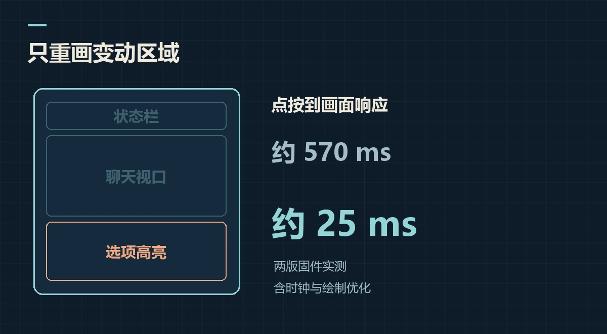

游戏与外设原型 · 2026
深空 · 游戏与 Haimian 外设
在《深空》中，你通过虫洞回应来自 2826 年的宇航员 E-17，帮他做出选择。Haimian 把这段对话搬到桌面，小屏显示来讯，旋钮选择，按键回复。
打开游戏 ↗ 放大查看 ↗
放大查看 ↗一条跨时空来讯
E-17 从 2826 年接通了你的手机。用选项或自己的话回复他，决定下一步行动。有些行动会消耗燃料或氧气，有些要等一段时间才收到回联。
- 读 E-17 来讯
- 选择或输入
- 查看回联
实现细节
剧情会随选择改变燃料、氧气、信号和信任。《深空》会保存对话和行动结果，离开后仍能从原处继续。
 放大查看 ↗
放大查看 ↗剧情分两层生成
规划层先为一章安排目标、选择点和各选项的走向。玩家发来内容后，叙述层结合当前节点与前情生成 E-17 的对话，并返回资源变化。服务端把结构化结果写入游戏状态。
实现细节
进入等待时，服务端可在后台提前生成行动结果，到时间再揭晓。每章结束时异步整理章节纪要和关键事实，供后续生成引用。
同一局，接着玩
网页端和 Haimian 都向同一个游戏服务读写进度。服务端按存档标识保存状态，网页端保存当前存档的标识。外设连接 WiFi 后，在配网页载入同一个存档，就能接着读已有对话和选项。
实现细节
游戏服务负责剧情和存档。Haimian 通过设备版接口取得精简状态，异步提交选项，并轮询后续回复。
旋钮选，按键发
旋转编码器识别转动方向，固件用它移动选项焦点，或在历史页滚动。短按提交当前选项，历史页和生成中的短按会被忽略，避免回看时误发。
实现细节
长按进入配网。外设先更新本地焦点，确认后才向游戏服务提交；服务返回新的回合状态后，小屏继续显示对话。
小屏怎样刷新
样机使用 ESP8266 和 240 × 240 的 ST7789 彩屏。固件以 TFT_eSPI 绘制界面，区分内容更换、聊天视口移动和选项高亮变化。一格旋钮只改变高亮时，重绘对应位置。
实现细节
固件用小块像素缓冲处理部分中文字形，以成块传输减少逐段写屏。项目文档比较了两版固件，点按到画面响应约从 570 ms 缩到 25 ms。对照包含 CPU 与 SPI 时钟调整和绘制优化，这组计时从点按开始，到本地画面更新为止。

放大查看 ↗外壳怎样装起来
样机把倾斜彩屏、前置旋钮和确认键固定到前壳。PCB、后盖和底座在结构模型中分件，爆炸图用来检查各零件的装配位置。
实现细节
打印出多版外壳后，再试装屏幕和电子模块，检查开孔位置和壳体空间。


USB 管理设备
Windows 控制台通过 USB 串口识别设备，提供应用切换、主题设置和时间同步。除《深空》外，同一块屏幕还能显示额度屏和时钟。
实现细节
USB 负责本地配置，游戏剧情和存档由设备的 WiFi 连接到游戏服务。初次联网时可进入外设的配网模式，再连接 2.4 GHz WiFi。
 放大查看 ↗
放大查看 ↗